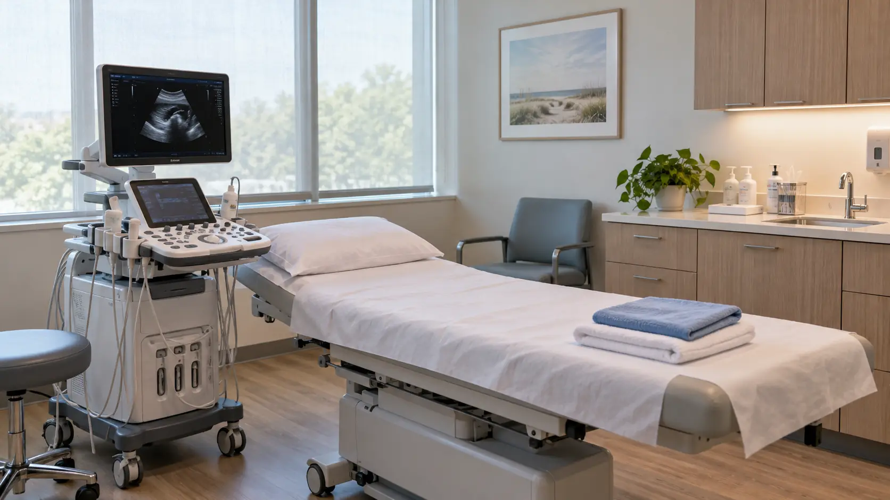
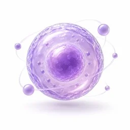
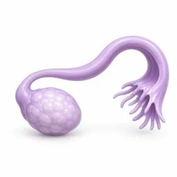
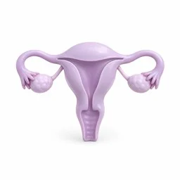
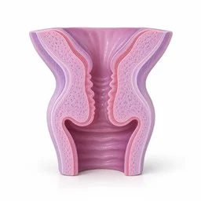
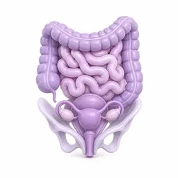
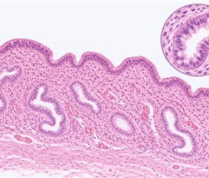
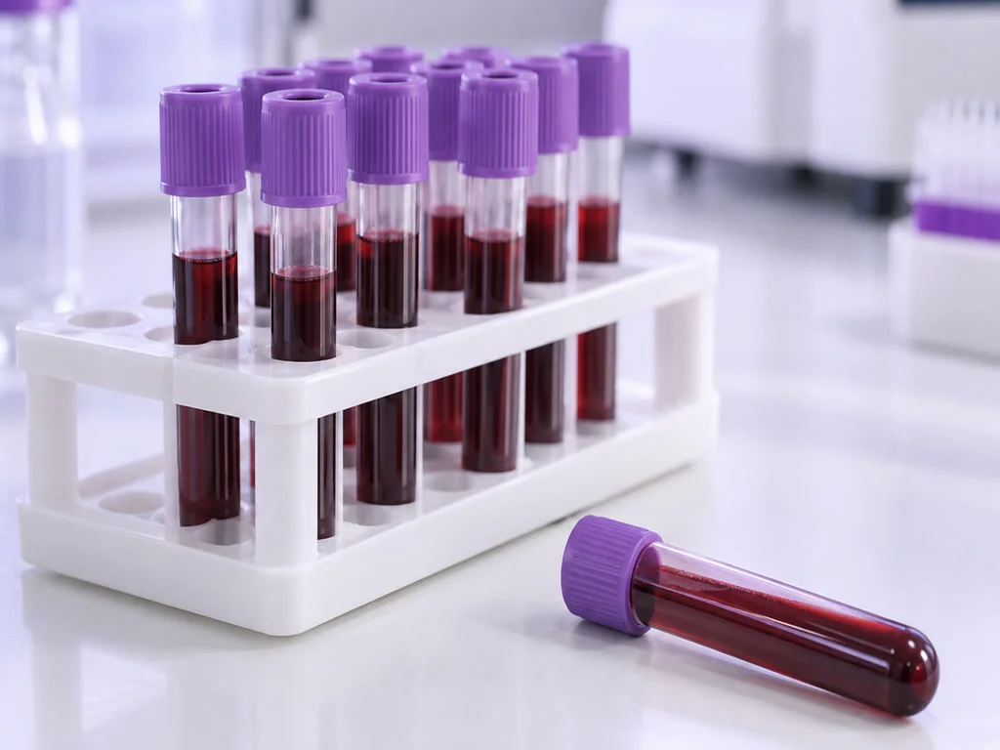
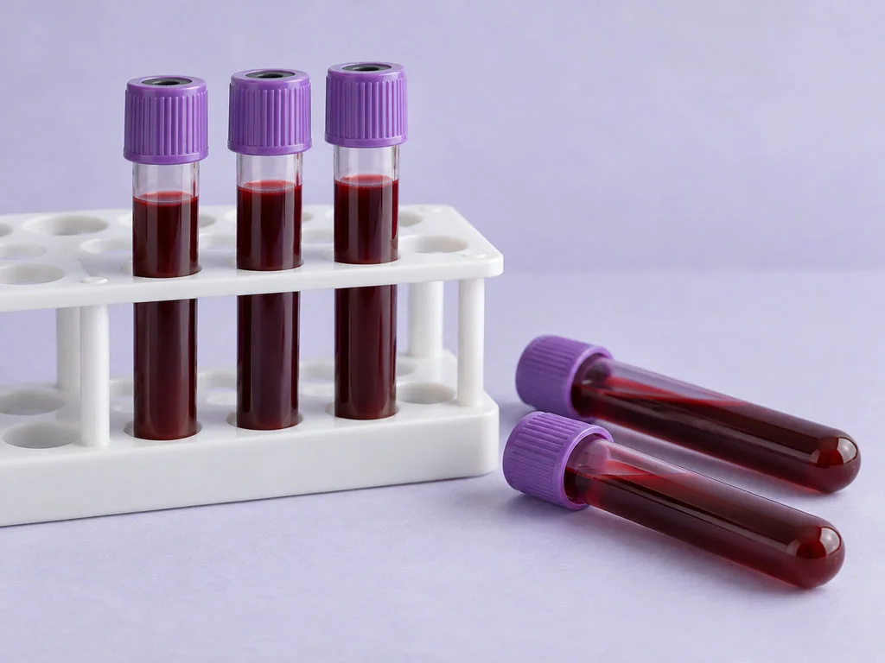

난임 검사
검사가 필요한 시점을 정하고 원인을 살펴봅니다.

주기에 따라 필요한 검사를 정해
여러 원인을 함께 살핍니다.
생리 시기에 따라
검사 일정을 정해
여러 원인을 함께 살핍니다.
피임하지 않고 1년간 임신을 시도해도 소식이 없다면 검사를 상의합니다. 35세부터는 6개월을 기준으로 합니다.
봄날은 주기에 맞는 검사 시점을 먼저 정하고 부부의 상태를 함께 살펴
임신을 어렵게 하는 요인을 확인합니다.
확인된 검사 소견에 따라
앞으로의 진료를 상의합니다.
검사 수치를 받았어도 어떤 의미인지 궁금할 수 있습니다.
봄날에서는 담당 원장이 결과지의 항목을 짚으며
상담 시간을 두고 설명합니다.
배란과 호르몬에 관련된 질환이 의심되면
생식내분비 진료 경험을 바탕으로 검토합니다.
방문 날짜를 부부가 함께 맞추면
검사 소견을 모아 진료 계획을 상의할 수 있습니다.
배란과 호르몬을 함께 보는 진료팀
생리 이력과 내분비 검사에서 확인한 정보를 모아
난소가 반응하는 양상과 호르몬 상태를 검토합니다.

영상으로 확인하는 정자 상태
현미경 영상에서 정자가 얼마나 있고 어떻게 움직이는지 살펴
남성 검사의 기초 자료로 활용합니다.
두 사람의 검사 소견 비교
어느 한 사람의 결과에만 의존하지 않고
부부의 임신 관련 요인을 같이 검토합니다.
임신이 늦어지는 고민,
함께 이야기해 주세요
피임을 하지 않고 임신을 시도하는 중에
1년이 지나도 임신이 되지 않으면 검사를 고려합니다. 35세 이상은 6개월 뒤 상의합니다.
지금까지 임신한 적이 없는 경우는 일차성,
이전에 임신한 적이 있는 경우는 이차성으로 구분합니다.
임신을 준비하는 과정에서
난임으로 진료받는 부부가 있으며,
혼자서만 겪는 문제라고 생각하지 않으셔도 됩니다.
임신을 준비하는 나이와 건강 상태에 따라
누구에게나 상담과 검사가 필요한 시기가 생길 수 있습니다.
임신에 영향을 주는 요인을 나눠 살핍니다.
배란부터 자궁과 난관의 상태까지, 의심되는 원인에 맞춰 일곱 갈래의 요인을 확인합니다.

배란장애
호르몬 분비 양상이 달라지면서
생리가 없거나 출혈 시기가 불규칙해질 수 있습니다.
여러 달 동안 생리를 하지 않거나,
배란 여부가 불분명한 경우

나팔관 이상
난관의 통로가 막힌 상태에서는
난자와 정자가 만나는 과정이 어려워집니다.
골반에 염증을 앓았거나 난관 수술 및
자궁외임신을 치료받은 적이 있는 경우

자궁 이상
내막이 자라는 과정에 이상이나 손상이 생기면
배아의 착상에 영향을 줄 수 있습니다.
자궁 안의 유착이나 근종,
내막 두께의 문제가 있는 경우

자궁경관 이상
자궁경부의 점액 상태가 적절하지 않으면
정자가 경부를 지나는 데 영향을 받을 수 있습니다.
이전 처치 뒤 경부에 손상이 있거나
경부 염증이 확인된 경우
면역학적 요인
정자에 반응하는 항체가 만들어져
면역반응이 영향을 주는 경우입니다.
부부의 기본 검사에서 이상이 없는데도
임신이 이어지지 않는 경우
원인불명
필요한 검사를 진행한 뒤에도
뚜렷한 요인이 확인되지 않을 수 있습니다.
검사에서
설명할 만한 이상이 발견되지 않은 경우

복강내 이상
내막증이나 골반 내 염증 등의 영향으로
난관 주위 조직이 붙어 있을 수 있습니다.
평소와 달리 심해진 생리통이
함께 나타나는 경우

남성의 검사에서도 임신에
영향을 주는 요인을 확인합니다.
정자 생성과 이동 경로, 면역반응 및 성기능을 다섯 항목으로 구분해 살펴봅니다.
정자 형성 장애
정자를 생성하는 고환의 기능에 이상이 생긴 경우를 살펴봅니다.
수와 형태, 움직임의 문제를 함께 확인합니다.
정자 형성 장애
정자를 생성하는 고환의 기능에 이상이 생긴 경우를 살펴봅니다.
정자의 수, 모양 및 운동 양상에서
달라진 부분을 확인합니다.
정자 이동통로 문제
정자가 지나가는 부고환과 정관,
전립선 부위에 이상이 있으면
정자가 밖으로 나오는 과정에 영향을 줄 수 있습니다.
정자 이동통로 문제
정자가 지나가는 부고환과 정관,
전립선 부위에 이상이 있으면
정자가 밖으로 나오는 과정에 영향을 줄 수 있습니다.
정자 항체반응
몸 안에서 정자에 반응하는 항체가 확인되면
난임과의 관련성을 검토합니다.
정자 항체반응
몸 안에서 정자에 반응하는 항체가 확인되면
난임과의 관련성을 검토합니다.
성교장애
발기나 사정의 문제로 임신을 위한 관계가
원활하지 않은 경우도 확인합니다.
성교장애
발기나 사정의 문제로 임신을 위한 관계가
원활하지 않은 경우도 확인합니다.
고환 조직 · 기능 문제
정계정맥류, 음낭수종 또는 호르몬 이상으로
정자가 만들어지는 기능이 달라질 수 있습니다.
고환 조직 · 기능 문제
정계정맥류 · 음낭수종
호르몬 관련 문제와 고환 기능을 함께 살펴봅니다.
생리 주기별 여성 검사
검사마다 확인하기에 알맞은 시기가 있습니다.
생리 시작일을 기준으로 방문 일정을 정합니다.

생리 전자궁내막
조직 검사
자궁내막의 호르몬 반응 여부
- • 얇은 관을 이용해 적은 양의 조직 확보
- • 다음 생리가 시작되기 전 일정 조율

생리 2~3일째 호르몬검사
(FSH · LH · 에스트로겐 등)
난소의 반응과 배란에 관련된 호르몬 상태
- • 채혈한 검체에서 여러 호르몬 수치 확인
- • 생리 시작 후 2~3일 시점에 방문
초음파
나팔관조영술
자궁 형태와 난관의 통과 여부
- • 조영제를 사용한 뒤 초음파로 확인
- • 약 10~20분 진행, 아랫배가 불편할 수 있음
배란 확인 · 자궁경부점액
성교 후 검사
배란의 진행과 정자가 통과하는 상태
- • 난포 초음파 관찰과 경부 점액 확인
- • 배란일 부근에 추가 방문이 필요할 수 있음
남성 검사
남성 검사는 여성의 생리 날짜에 맞출 필요가 없어 부부가 함께 방문해 시작할 수 있습니다.
정액검사
정자의 개수와 움직임, 살아 있는 비율 및 모양
- • 2~3일 금욕한 뒤 채취해 영상으로 관찰
- • 여성 검사 날짜와 함께 일정 조율 가능

내분비검사
정자 생성에 관여하는 호르몬 상태
- • 채혈을 통해 남성호르몬 등의 수치 확인
- • 정액의 검사 소견에 따라 추가 시행
고환조직검사
고환에서 정자가 만들어지는 상태
- • 필요한 부위를 마취하고 소량의 조직 확보
- • 무정자증이 생긴 요인을 확인할 때 검토
염색체 · 유전자검사
유전적 이상 여부
- • 혈액 검체로 염색체의 수와 구조 확인
- • 반복 시술 이력과 가족력 등을 고려
WHO 기준 정액검사 정상수치
| 항목 | 정상수치 |
|---|---|
| 정액 1회 사정량 | 1.5ml |
| 1회 사정한 총 정자수 | 3,900만 |
| 정자의 수 | 1,500만/ml |
| 살아있는 정자 비율 | 58% |
| 직진 운동성 정자 비율 | 32% |
| 운동성 있는 정자 비율 | 40% |
| 정상 형태 정자 비율(엄밀 기준) | 4% |
기초 검사
| 검사 | 내용 |
|---|---|
| 혈액형 · 항체검사 | 혈액형과 매독, HIV, B형간염 등에 관한 혈액검사 |
| 소변검사 | 기본 건강상태 확인 |
확인된 결과를 설명드리고
다음 진료를 함께 정합니다
난임 클리닉 보러가기
검진 결과 정밀 상담
원인 유형 확인
개인 맞춤 치료 설계

봄날
난임검사의 확인 과정
기초 상태부터 살피는 검사
난자와 정자를 자세히 확인하기에 앞서 기본 검사로
건강 상태를 살핀 뒤 다음 검사를 정합니다.
검사 방법과 자료의 검토
진료에서 사용하는 검사 방법을 살펴보고,
필요한 정보를 얻을 수 있는 방법을 선택합니다.
소견에 따른 남성 추가 검사
남성 요인이 임신에 영향을 줄 수 있으므로
정액검사와 추가 소견을 함께 검토해 진료 방향을 상의합니다.
난임 검사,
봄날에서 답해드립니다
검사를 위해 몇 번 방문해야 하나요?
주기에 맞춰 받아야 하는 항목이 있으면 한 번에 끝나지 않을 수 있습니다. 첫 방문 때 검사별 날짜를
서로 맞춰 정합니다.
남성 검사는 언제 시작하면 되나요?
임신에 영향을 주는 남성 요인도 있어 함께 검사하는 것이 도움이 됩니다. 정액검사는 여성의 생리 시기에 맞출 필요가 없으므로 방문 날짜를 함께 잡을 수 있습니다.
다른 곳에서 받은 결과지도 도움이 되나요?
최근 결과지를 지참하면 같은 검사가 다시 필요한지 판단하는 데 참고할 수 있습니다. 촬영 자료나 복용약 목록도 함께 가져오세요.
결과 설명은 언제 들을 수 있나요?
결과가 확인되는 시점은 항목에 따라 다릅니다. 채혈검사는 며칠 걸릴 수 있으며, 자료가 모이면 담당 원장과 상담 일정을 정합니다.
결과를 받은 뒤 진료 시기를 정해도 되나요?
현재 상태를 설명받은 뒤 두 분의 임신 계획을 고려해 치료가 필요한지, 언제 어떤 방법으로 진행할지 상의합니다.